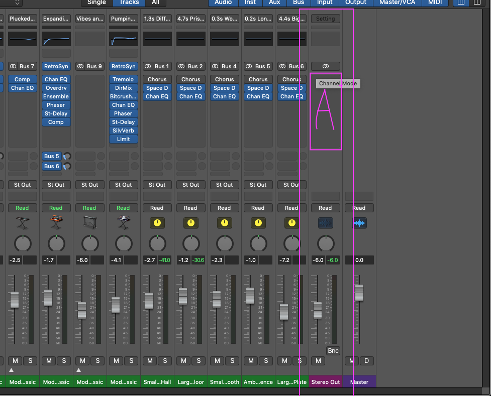
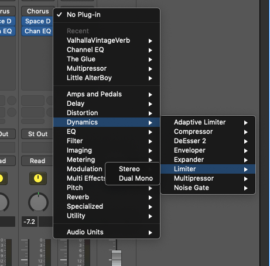
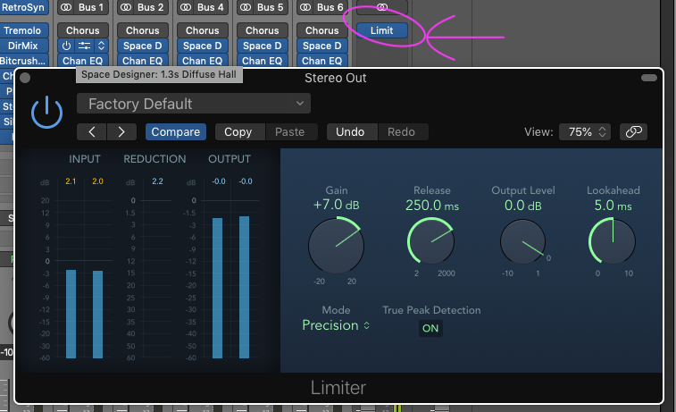

MASTERING
Basic mastering
1) In this Stereo out part, you can add 'maste audio FX'!!
2) Now you can fill the rest 6Db
3) In A part, I will add Limiter(Audio FX -> Dynamics - Limiter)

1) You can select limiter like this picture
2) Now you can fill the rest 6Db

1) You can volume up to 3Db(INPUT level)
2) You can control Gain knob to Control volume

Add)
This mastering part is real real basic
So if you study more
study LUFs, Compressor, Multicompressor, EQ...
Likewise mixing, there's lots of things to learn in mastering.
I hope this guides help you a little to start logic pro